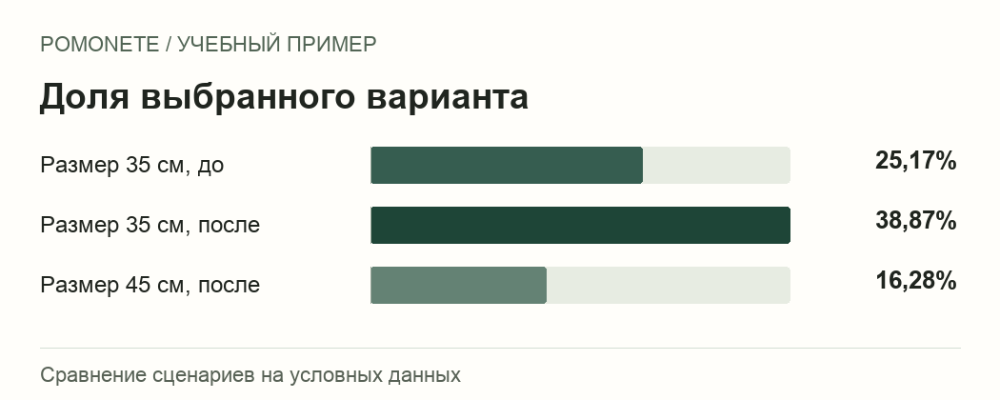

Как селлеру Яндекс Маркета сверить продажи вариантов одной карточки
Что меняется, когда общая аналитика карточки скрывает движение отдельных размеров.
На Яндекс Маркете одна карточка лотков собирает показы у нескольких размеров. Оборот карточки почти не сдвинулся, хотя доля среднего размера резко выросла. Это влияет на закупку и отображает выбор покупателей точнее, чем общий график. Сначала соберём аналитический срез, в котором размер связывается с отдельным предложением.
Границы карточки на дату операции
Возьмите стабильные идентификаторы предложений и перечень вариантов, входивших в карточку в момент события. После объединения карточек может измениться исторический состав. Сохраните таблицу связей с датами, прежде чем выводить долю. Этот расчёт пригоден при сопоставимой доступности ходовых размеров.
Чтобы пересобрать расчёт «Доля выбранного варианта» для своего магазина, перенесите в него исходные числа. В формуле A обозначает «доставленные единицы выбранного размера», B обозначает «доставленные единицы карточки». Деление отвечает за долю, умножение на 100 переводит её в проценты. При нулевом знаменателе долю оставляют пустой. Запишите рядом период и охват каждого среза. Для оценочных строк оставьте пояснения рядом с исходными значениями. При чтении сводки будет видно, какие из них пока подтверждены.
Доля выбранного варианта = A ÷ B × 100
| Условие | Доставленные единицы выбранного размера | Доставленные единицы карточки | Доля выбранного варианта |
|---|---|---|---|
| Размер 35 см, до | 72 | 286 | 25,17% |
| Размер 35 см, после | 117 | 301 | 38,87% |
| Размер 45 см, после | 49 | 301 | 16,28% |

В сценарии «Размер 35 см, до» в формулу подставляем доставленные единицы выбранного размера = 72, доставленные единицы карточки = 286. Получается 25,17%. В первой неделе доступны три размера лотка, доля считается среди доставленных единиц карточки.
В сценарии «Размер 35 см, после» в формулу подставляем доставленные единицы выбранного размера = 117, доставленные единицы карточки = 301. Получается 38,87%. У среднего размера стал короче срок получения, а состав вкладок в отчёте сохранили.
В сценарии «Размер 45 см, после» в формулу подставляем доставленные единицы выбранного размера = 49, доставленные единицы карточки = 301. Получается 16,28%. Сравним, какую часть во второй неделе занимал крупный размер с другим запасом.
Если «Размер 35 см, до» взять за исходную точку, «Размер 35 см, после» меняет показатель «доля выбранного варианта» на 13,7 п. п., а «Размер 45 см, после» на -8,9 п. п.. Между двумя последними строками разница составляет -22,59 п. п. при вычитании второй из третьей. Смотрите, какой именно вход изменился между строками. Если менялись объём и условия одновременно, итог сравнения относится ко всему сочетанию.
При расчёте «доля выбранного варианта» оставляйте исходную точность, пока складываете значения и сверяете строки. В таблице видны 25,17%, 38,87% и 16,28%, уже округлённые для чтения. При суммировании многих периодов используйте исходные данные. Например, удельные результаты с разными знаменателями нужно пересобрать из числителей и соответствующих объёмов, а затем округлить. Пометьте, где округление применяется, чтобы при передаче отчёта речь шла об одних и тех же числах.
Как учитывать отсутствие размера
Вариант может потерять долю, потому что был недоступен несколько дней. Сведите долю с часами в наличии и сроками доставки. Если крупного размера не было, оставьте отдельную пометку. Прогноз по полной неделе доступности собирайте после пополнения и отдельно от общих чисел карточки.
Воспроизводимость здесь начинается с критериев включения. Отметьте, чем «Размер 35 см, до» отличается от «Размер 45 см, после» и какие наблюдения будут отброшены в каждой строке. Как подтверждение используйте отчёт аналитики и история доступности предложения. У неполных записей выделите одну причину. Она покажет, какие цифры ещё стоит собирать и какой объём анализа потерян.
Рядом с таблицей показов положите календарь доступности, позиций и цен. Выгрузка агрегатов удобна для первого сигнала, но день с выключенным предложением ломает сравнение. Для каждой крупной группы полезно иметь отдельные суммы числителя и знаменателя. Если у дорогой категории мало показов, сводная конверсия почти полностью повторит поведение ходовых позиций. Для разбора причины начните именно с групп, у которых заметно изменился вклад в суммарную аудиторию.
Что сильнее всего меняет результат
От результата 38,87% в строке «Размер 35 см, после» пересчитайте несколько вариантов. Проверьте «доставленные единицы выбранного размера», «доставленные единицы карточки». Прибавка около десятой доли на вход показывает реакцию за один шаг. Целые числа сохраняем целыми. Для долей, где прирост выводит числитель за предел базы, пробуем уменьшение. Все остальные параметры при каждой подстановке сохраняются.
- «Доставленные единицы выбранного размера» меняется с 117 на 129. При прежних остальных входах получается 42,86%, сдвиг составляет 3,99 п. п..
- «Доставленные единицы карточки» меняется с 301 на 331. При прежних остальных входах получается 35,35%, сдвиг составляет -3,52 п. п..
Больше всего изменила итог подстановка «доставленные единицы выбранного размера». Отклонение составило 3,99 п. п.. До сбора новых данных оцените, насколько правдоподобен такой шаг. Например, расход может подтверждаться документом, а объём пока наблюдается лишь частично. Уточняйте прежде всего те входы, где одновременно возможен заметный сдвиг и мало подтверждений.
Если покупатели берут наборы нескольких размеров, пройдите несколько товарных строк комплекта. Пропорции по остаткам могут отличаться от пропорций в отгрузке, потому что комплект расходует больше физических единиц. Сформируйте таблицу состава отдельно от долей в карточке.
Что написать в заказ поставщику
Подготовьте заказ в разрезе физических размеров, указав наблюдение за неделей и причину перераспределения. Для группы с выросшей долей сделайте осторожную контрольную поставку. Сравните, сколько продаж добавилось карточке и сколько переместилось между вариантами, после того как все размеры снова станут доступными.
Снимайте второй срез на тех же условиях. Если изменились источники или доли предложений, добавьте таблицу с фиксированным составом товаров и отметьте, какую долю исходной выборки она охватывает. Один расчёт покажет, что произошло у магазина в целом. Расчёт с фиксированным составом покажет изменение у сравнимых позиций. Заказы закрываются со временем, поэтому суммы по завершённым продажам дополните датой проверки.
Чтобы отделить ошибку оценки от реального изменения, после следующего отчёта соберите «доля выбранного варианта» дважды. Сначала используйте исходное правило, затем замените только один предположенный вход фактическим. Так аналитика селлера Яндекс Маркета покажет, стоит ли тратить время на повторный замер или менять рабочую операцию. В итоговом отчёте сохраните обе даты проверки.